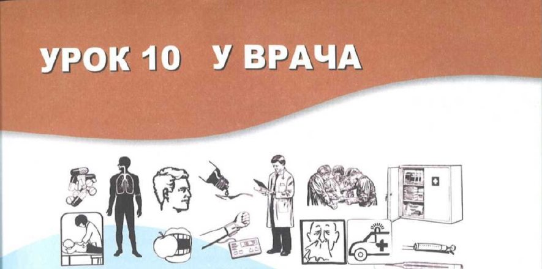

Подготовка к заданию 6 · 题型六准备
Урок 10. У врача
第10课 · 看医生
Упражнения из учебника · 教材练习
10.7А · с. 19; 10.8А · с. 21; 10.9А · с. 23
20 пар · 20 баллов
20组配对 · 满分20分

Слова и объяснения · 词语与释义
Прочитайте слова и словосочетания из первой таблицы. Соедините по смыслу с объяснениями из второй таблицы. Напишите номера объяснений, соответствующих словам и словосочетаниям.
阅读第一表中的词语，按意思与第二表中的解释配对，在词语旁填写对应解释的编号。
Баллы · 评分
За каждую верную пару — 1 балл. Максимум — 20 баллов. За неверную или пустую пару — 0 баллов.
每组配对正确得1分，满分20分。配对错误或未填写得0分。
Как вас зовут? · 你叫什么名字？
Ответы сохраняются только до закрытия страницы. · 答案仅保留到关闭页面。
Слова и значения
Читайте слова и объяснения. Запоминайте значения.
阅读词语和解释，记住词义。
Как выполнять задание · 看示范Образец · 示范
Как выполнять задание
Посмотрите образец. Найдите объяснение слова. Напишите его номер.
看示范，找到词语的解释，填写编号。
Подготовка к заданию 6
Прочитайте слова. Найдите объяснение. Напишите его номер.
阅读词语，找到解释，填写编号。
Каждый номер используйте один раз.
每个编号只用一次。